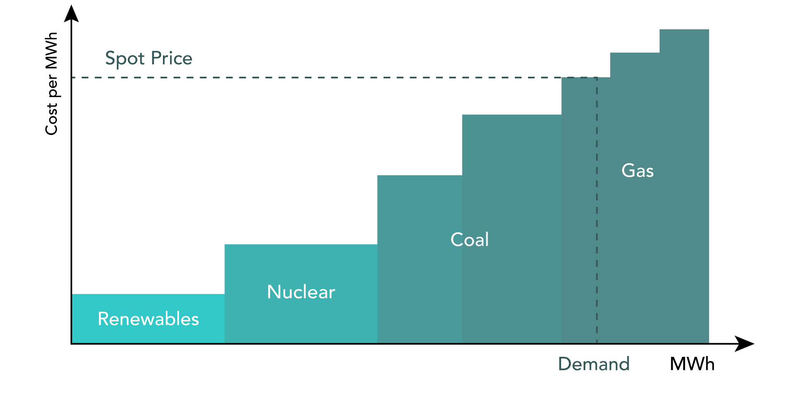

La electricidad
Es un commodity local
No es almacenable (oferta y demanda deben ser iguales en cada momento)
Altamente estacional
Tiene limitaciones en su transporte (obedece a ciertas leyes)
Su oferta y demanda dependen de factores climáticos (entre otros)
La electricidad
Es un bien fundamental para las personas y la industria
Los precios minoristas (o la factura de electricidad) se pueden dividir en tres componentes: precio por la energía consumida (coste de aprovisionamiento y margen de comercialización), costes de transprote y distribución, e impuestos y cargos
El primer componente depende principalmente de los precios en el mercado mayorista
Mercado mayorista
Conjunto de plataformas de negociación en las que se contrata energía eléctrica para su entrega en diferentes horizontes temporales, que pueden ser a plazo (para las próximas semanas, meses, trimestres o años) o al contado (para el día siguiente o las horas siguientes).

Secuencia de mercados
Mercado mayorista

Secuencia de los mercados en España (Fuente: Energía y Sociedad)
Mercado spot o de contado
En Europa existe un mercado zonal integrado de la electricidad que permite a productores y consumidores comprar y vender en una zona mayor que la de un solo país: todos los países de la UE participan en el acoplamiento diario único.

Mercado spot o de contado
El algoritmo de compensación (Euphemia) del mercado acepta las ofertas presentadas por todos los participantes del mercado con el fin de maximizar el bienestar social total (las diferencias de precios entre las zonas resultan de las restricciones físicas de intercambio).
El mercado mayorista español primero se integró con el mercado portugués, formando el denominado Mercado Ibérico de la Electricidad (MIBEL), y a partir del 2014, el mercado diario se acopló con el mercado europeo.
Curva de mérito
Curva de mérito (Fuente: https://www.squeaky.energy/blog/understanding-power-markets-merit-order-and-marginal-pricing)
Precio spot o Day-Ahead
A corto plazo, el precio spot es decisivo para las decisiones de generación y consumo
A largo plazo, los precios al contado dan señales cruciales para la inversión en nuevos activos energéticos
Además, son una referencia clave para los mercados a plazo y de balanceo
Se caracterizan por tener una gran cantidad de datos atípicos, patrones estacionales, y reversión a la media.
Su modelación y pronóstico es un reto para los generadores, operadores del mercado y de la red (académicos).
Mayor reto con el incremento de las fuentes de generación renovables no convencionales
Fuentes de los datos
A continuación se presenta un análisis de las características del mercado eléctrico español mediante la identificación de regularidades y tendencias en las series temporales de datos sobre demanda, generación de energía eléctrica y precios de la electricidad y combustibles.
Las fuentes de información utilizadas son: e.sios, OMIE y MIBGAS
La frecuencia de los datos es horaria y diaria
Se analiza el período de 2014 a 2024
Demanda

Demanda
Estadísticas descriptivas demanda diaria
| Mínimo |
530,279.72 |
506,635.69 |
473,012.99 |
512,584.54 |
457,528.88 |
283,324.33 |
| Media |
694,105.18 |
682,220.40 |
646,284.62 |
663,692.16 |
645,110.12 |
629,189.56 |
| Máximo |
836,337.85 |
823,153.42 |
820,108.82 |
834,692.86 |
786,683.30 |
781,022.05 |
| D. Est |
65,823.90 |
65,456.31 |
74,882.64 |
61,744.84 |
67,409.37 |
70,312.09 |
| Sesgo |
-0.31 |
-0.21 |
-0.15 |
-0.08 |
-0.24 |
-0.32 |
| Curtosis |
-0.68 |
-0.50 |
-0.72 |
0.05 |
-0.34 |
0.84 |
La demanda de electricidad disminuyó en 2020 debido a la pandemia, repuntó en 2021 y luego ha venido decreciendo durante el 2022 y 2023 (producto del incremento en los precios). La demanda industrial no ha recuperado sus niveles precrisis energética.
Renovables

Requerimientos de flexibilidad
Para analizar el comportamiento de los requerimientos de flexibilidad del sistema eléctrico, se toma la generación renovable no gestionable horaria \((GR)\), que es igual a la suma de la generación eólica, la solar fotovoltaica y la hidráulica fluyente.
Se analiza su variación para horizontes de tiempo de una hora \((GR_h - GR_{h-1})\) y de cuatro horas \((GR_{h} - GR_{h-4})\).
Esta variación de la aportación de las energías renovables no gestionables puede generar mayor necesidad de flexibilidad en el sistema.
Requerimientos de flexibilidad

Requerimientos de flexibilidad
Los requerimientos netos de flexibilidad o hueco térmico se calculan como las diferencias de \(D-N-GR\) para horizontes de una y cuatro horas. \(D\) es la demanda, \(N\) es la generación nuclear y \(GR\) la generación renovable no gestionable.

Precios de commodities

Evolución de los precios spot
Datos
En es esta sección se analiza el comportamiento de los precios de electricidad en el mercado mayorista español.
Se utilizan los datos publicados en e.sios.
La frecuencia de los datos es horaria y diaria, y el período de análisis inicia en enero de 2014 y termina en septiembre de 2024.
Precios horarios

Precios horarios
Estadísticas descriptivas precios horarios
| Mínimo |
0.00 |
| Media |
68.82 |
| Máximo |
700.00 |
| D. Est |
53.90 |
| Sesgo |
2.41 |
| Curtosis |
8.40 |
Precios horarios
Al descomponer la serie de tiempo de los precios horarios entre su tendencia, estacionalidad y componente aleatorio, se encuentra el comportamiento alcista de los datos durante el 2021 y 2022.
En las estadísticas descriptivas se observa que la serie de precios tiene una curtosis mayor a tres, indicando que cumple con el hecho estilizado de los precios de electricidad de tener una distribución de colas pesas o con una gran cantidad de datos extremos, tanto en la cola derecha (precios altos) como en la cola izquierda (precios bajos).
Además, la serie de precios presenta sesgo positivo, indicando que se concentran más datos hacia la derecha de la media de los precios que hacia la izquierda.
MOE
Una aproximación a la estimación del efecto de mérito (merit-order effect) se puede realizar por mínimos cuadrados ordinarios, utilizando la siguiente regresión:
\[ Precio_h = b_0+b_1Eolica_h+b_2PV_h+b_3Demanda_h+\epsilon_h \]
donde \(Precio_h\) es el precio spot en la hora \(h\), \(Eolica_h\) es la generación eólica en la hora \(h\), \(PV_h\) es la generación solar fotovoltaica en \(h\), \(Demanda_h\) es la demanda y \(\epsilon\) son los errores.
De esta manera, los betas \(b_1\) y \(b_2\) estiman en cuánto disminuyen los precios por cada megavatio hora adicional de electricidad generado con fuentes eólicas o fotovoltaicas, respectivamente.
MOE
El MOE genera el “missing money problem” (los ingresos de los generadores no bastan para incentivar niveles óptimos de inversión) que tiene como implicaciones:
- Rentabilidad inadecuada de la inversión en proyectos renovables
- Aumento de costes de conexión a la red (requiere mejorar la red para hacer frente a la intermitencia de la generación)
Así, los promotores de proyectos de energías renovables se enfrentan al riesgo de MOE, que debería aumentar con el creciente despliegue de capacidad de generación de energía renovable (la llamada canibalización).
Precios diarios
Estadísticas descriptivas precios diarios
| Mínimo |
0.40 |
| Media |
67.81 |
| Máximo |
547.46 |
| Varianza |
2,609.81 |
| D. Est |
51.09 |
| Sesgo |
2.43 |
| Curtosis |
8.44 |
Modelación de precios
Un modelo explicativo del comportamiento de los precios se puede realizar mediante un modelo de regresión lineal tomando como variables explicativas la generación eólica, fotovoltaica, la demanda, los precios del gas natural y el carbón (EUA). La especificación del modelo es la siguiente:
\[ \begin{align} Precio_t= & b_o+b_1Eolica_{t-1}+b_2PV_{t-1}+b_3Demanda_{t-1} \\ & + b_4Gas_{t-1}+b_5EUA_{t-1}+\epsilon_{t-1} \end{align} \]
Las variables explicativas se rezagan un día para tener en cuenta el modo en el que se forman los precios al por mayor. Los precios del gas natural fueron extraídos de MIBGAS y los precios del carbono (European Union Allowances) de Investing.
Modelación de precios
===============================================
Dependent variable:
---------------------------
PrecioSpot
-----------------------------------------------
LEolica -0.0001***
(0.00001)
LPV -0.0002***
(0.00003)
LDemanda 0.0001***
(0.00001)
LGas 1.133***
(0.027)
LEUA 0.722***
(0.047)
Constant -10.369
(9.027)
-----------------------------------------------
Observations 2,055
R2 0.752
Adjusted R2 0.751
Residual Std. Error 28.610 (df = 2049)
F Statistic 1,242.250*** (df = 5; 2049)
===============================================
Note: *p<0.1; **p<0.05; ***p<0.01
Curva de pato

Fuente: https://morningtonenviro.org.au/big-batteries-are-solving-a-longstanding-problem-with-solar-power-in-california-can-they-do-the-same-for-australia/
Curva de pato - Demanda
Shiny App Iframe
Curva de pato - Precios
Shiny App Iframe
Perfil de precios
Los años 2021, 2022 y 2023 presentan los precios más altos para todas las horas del día.
Cada vez se evidencia una disminución más pronunciada entre las 7:00 y las 16:00 horas, indicando el efecto de la mayor generación con plantas fotovoltaicas.